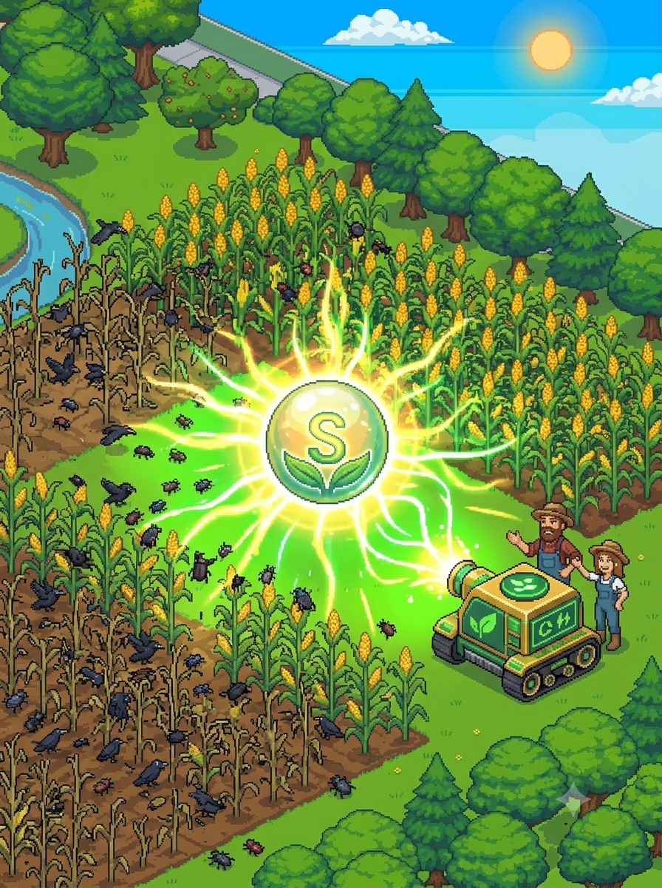
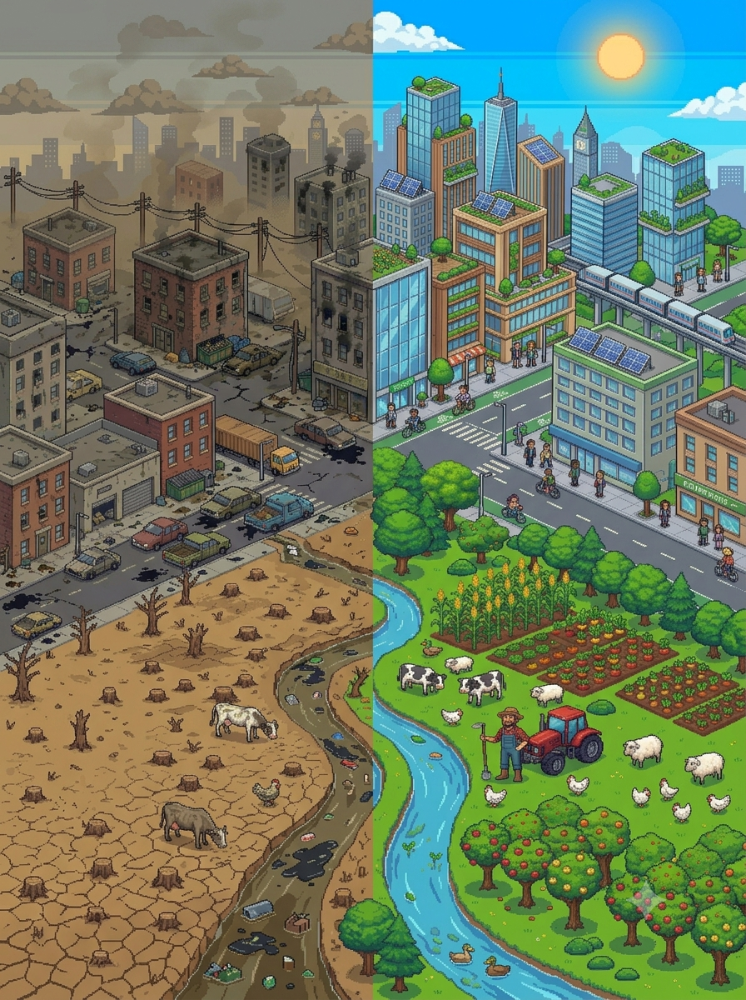

Aprendendo sobre o equilíbrio entre a produção e o meio ambiente de forma interativa

Defensor do Milharal: Proteja sua lavoura contra o ataque das pragas! Escolha com sabedoria entre defensivos químicos potentes ou alternativas biológicas sustentáveis para salvar a colheita sem destruir a saúde do solo.

Mestre da Sustentabilidade: Teste seus conhecimentos em um quiz rápido sobre cultivo, consumo consciente e preservação. Prove que você sabe como manter o equilíbrio perfeito entre a produção e a natureza!
Jornada do Produtor: Cuide de cada etapa da sua fazenda, desde o plantio do milho até as escolhas de irrigação e adubo. Depois, encare a estrada até a cidade desviando de obstáculos e receba sua avaliação final de sustentabilidade!